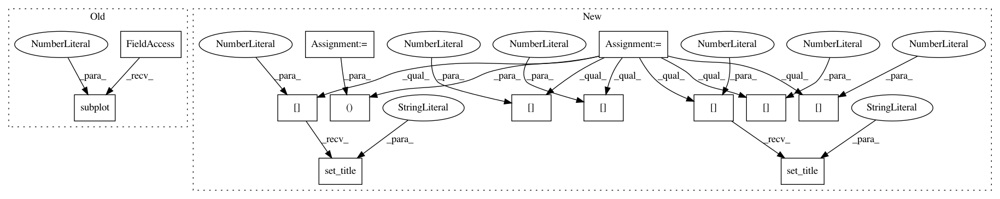

21339f4cbbe3988edfe24b28a91af2278b7a3382,doc/source/plots/hough_tf.py,,,#,7
Before Change
out, angles, d = hough_line(img)
plt.subplot(1, 2, 1)
plt.imshow(img, cmap=plt.cm.gray)
plt.title("Input image")
After Change
out, angles, d = hough_line(img)
fix, axes = plt.subplots(1, 2, figsize=(7, 4))
axes[0].imshow(img, cmap=plt.cm.gray)
axes[0].set_title("Input image")
axes[1].imshow(
out, cmap=plt.cm.bone,
extent=(np.rad2deg(angles[-1]), np.rad2deg(angles[0]), d[-1], d[0]))
axes[1].set_title("Hough transform")
axes[1].set_xlabel("Angle (degree)")
axes[1].set_ylabel("Distance (pixel)")
plt.tight_layout()
plt.show()
In pattern: SUPERPATTERN
Frequency: 3
Non-data size: 13
Instances
Project Name: scikit-image/scikit-image
Commit Name: 21339f4cbbe3988edfe24b28a91af2278b7a3382
Time: 2016-09-05
Author: multicolor.mood@gmail.com
File Name: doc/source/plots/hough_tf.py
Class Name:
Method Name:
Project Name: matplotlib/matplotlib
Commit Name: 27c2dc10bb9f83026db6378c151d8108fc044af8
Time: 2018-06-27
Author: jklymak@gmail.com
File Name: examples/images_contours_and_fields/triinterp_demo.py
Class Name:
Method Name:
Project Name: matplotlib/matplotlib
Commit Name: ec5e8863a6352da673b55cb971529f38278cf64e
Time: 2018-03-26
Author: pmhobson@gmail.com
File Name: examples/images_contours_and_fields/triinterp_demo.py
Class Name:
Method Name: